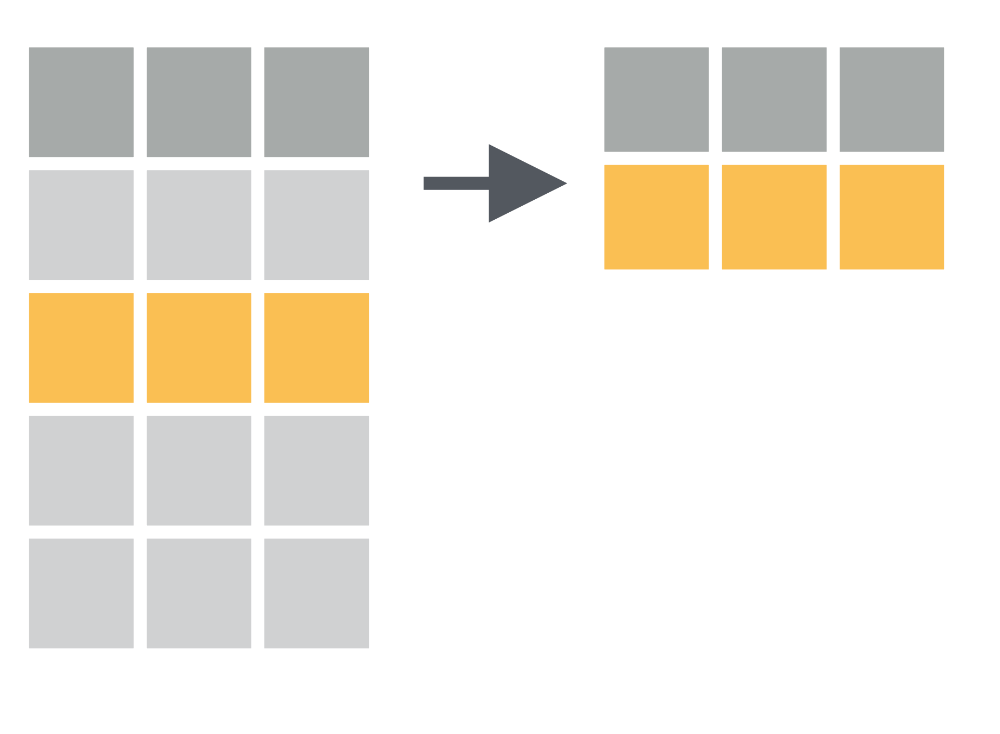
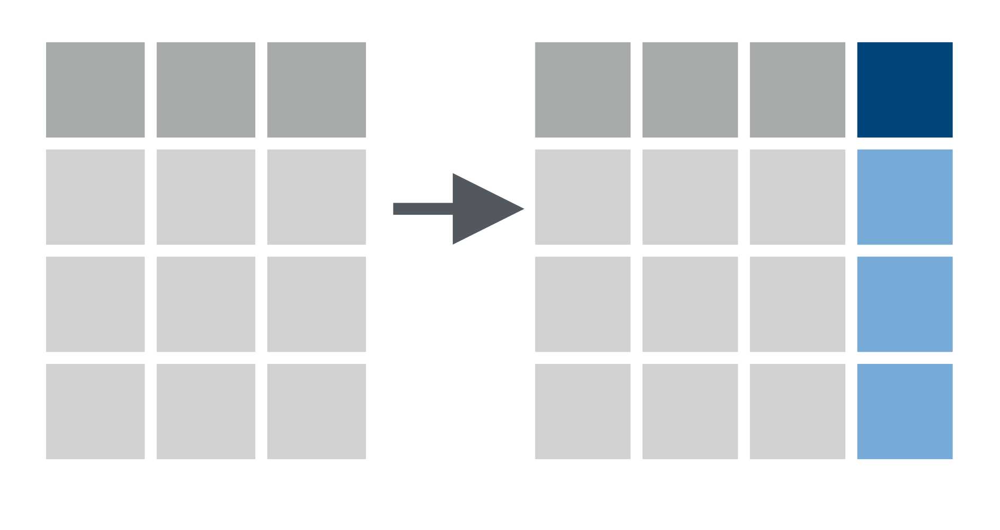

Data Wrangling
SPS 502
Descriptive Statistics
- Descriptive statistics aim to summarize a sample; there are two types of descriptive statistics:
- Measures of central tendency provide information about the most typical or average value of a variable
- Measures of variability (dispersion) provide information about the distribution of a variable
Measures of Central Tendency
Mean
- Arithmetic Mean (\(\bar{x}\) or \(\mu\)): the sum of a series of observations divided by the number of observations \[\bar{x} = \frac{1}{n}\left (\sum_{i=1}^n{x_i}\right ) = \frac{x_1+x_2+\cdots +x_n}{n}\]
- Use when describing continuous variables
- Sensitive to extreme values (e.g., income)
Median
- The middle value in a series of observations
- Arrange a series of observations from smallest to greatest then take the middle value
- Note: if there is an even number of observations, then there is no single middle value; the median is then usually defined to be the mean of the two middle values
- Arrange a series of observations from smallest to greatest then take the middle value
- In a distribution, the median is the \(2^{nd}\) quartile and the \(50^{th}\) percentile
- Use when describing continuous variables
- Robust to extreme values (e.g., income)
Normal Distribution
-1.png)
Positive Skewed Distribution
-1.png)
Negative Skewed Distribution
-1.png)
Mode
- Mode: the most common value in a series of observations
- Some variables include multiple modes (multimodal)
- Use when describing discrete (e.g., categorical) variables
Central Tendency Review
Arithmetic mean: sum of values divided by number of values
Median: middle value
Mode: most frequent value
What is the mean, median, and mode of \(x\)?
- \(x\) = {1, 2, 2, 3, 4, 7, 9, 10, 11, 12, 12}
Measures of Dispersion
Variance
- Variance (\(s^{2}\), \(\sigma^{2}\)): the extent to which a variable’s values deviate from or vary around its mean; the average distance of each observation from the mean \[s^{2} = \frac{1}{n-1} \sum_{i=1}^n (x_i - \bar{x})^2\]
Variance
- Measures how far observations are from their average value (spread of the data)
- Low variance \(\rightarrow\) observations are relatively close to the mean value
- High variance \(\rightarrow\) observations are relatively far from the mean value
- Expressed in square units (i.e., \(\text{inches}^2\))
Standard Deviation
- Standard Deviation (\(s\), \(\sigma\)): standardized measure of variance \[s = \sqrt{s^2} = \sqrt{\frac{1}{n-1} \sum_{i=1}^n (x_i - \bar{x})^2}\]
- Expressed in the same units as the mean (i.e., inches)
- Mean distance from the mean
Data Wrangling
Traditional Nested Functions
pipe %>%
- “Pipe” a data frame into a “verb” command
- “Chain” the results from one “verb” command into another
- Think of it as the word “then”
Data Wrangling
filter()

filter() to select a subset of rows
for crashes in Canyon county
# A tibble: 35,492 × 12
OBJECTID Severity Mile_Point Year County Number_Of_Fatalities
<dbl> <chr> <dbl> <dbl> <chr> <dbl>
1 20294 Property Dmg Report 0.004 2005 Canyon 0
2 21886 Property Dmg Report 5.25 2005 Canyon 0
3 26693 Property Dmg Report NA 2005 Canyon 0
4 18673 Property Dmg Report 9.27 2005 Canyon 0
5 17678 Property Dmg Report NA 2005 Canyon 0
6 17287 B Injury Accident NA 2005 Canyon 0
7 26710 Property Dmg Report NA 2005 Canyon 0
8 19529 Property Dmg Report 39 2005 Canyon 0
9 20899 B Injury Accident 50.0 2005 Canyon 0
10 19655 B Injury Accident 23.5 2005 Canyon 0
# ℹ 35,482 more rows
# ℹ 6 more variables: Number_Of_Injuries <dbl>, IntersectionRelated <chr>,
# Accident_Date_Time <dttm>, Hour <int>, Month <ord>, Day <ord>filter() for many conditions at once
for crashes in Canyon county in 2017
# A tibble: 3,191 × 12
OBJECTID Severity Mile_Point Year County Number_Of_Fatalities
<dbl> <chr> <dbl> <dbl> <chr> <dbl>
1 295441 B Injury Accident 4.32 2017 Canyon 0
2 288513 Fatal Accident 31.1 2017 Canyon 1
3 293711 Property Dmg Report 31.1 2017 Canyon 0
4 291456 Property Dmg Report 105. 2017 Canyon 0
5 306112 C Injury Accident 31.5 2017 Canyon 0
6 299918 A Injury Accident 11.2 2017 Canyon 0
7 295624 C Injury Accident 31.2 2017 Canyon 0
8 304753 Property Dmg Report 59.3 2017 Canyon 0
9 293682 Property Dmg Report 3.03 2017 Canyon 0
10 292901 Property Dmg Report 28.8 2017 Canyon 0
# ℹ 3,181 more rows
# ℹ 6 more variables: Number_Of_Injuries <dbl>, IntersectionRelated <chr>,
# Accident_Date_Time <dttm>, Hour <int>, Month <ord>, Day <ord>select() to keep variables
select() to exclude variables
# A tibble: 299,135 × 11
Severity Mile_Point Year County Number_Of_Fatalities Number_Of_Injuries
<chr> <dbl> <dbl> <chr> <dbl> <dbl>
1 Property Dmg… 270. 2005 Oneida 0 0
2 Property Dmg… 0.004 2005 Canyon 0 0
3 Property Dmg… 5.25 2005 Canyon 0 0
4 Property Dmg… 4.6 2005 Twin … 0 0
5 C Injury Acc… 1.62 2005 Koote… 0 2
6 Property Dmg… 20.5 2005 Ada 0 0
7 Property Dmg… NA 2005 Canyon 0 0
8 Property Dmg… NA 2005 Latah 0 0
9 Property Dmg… NA 2005 Koote… 0 0
10 Property Dmg… NA 2005 Bonne… 0 0
# ℹ 299,125 more rows
# ℹ 5 more variables: IntersectionRelated <chr>, Accident_Date_Time <dttm>,
# Hour <int>, Month <ord>, Day <ord>select() a range of variables
# A tibble: 299,135 × 2
Severity Mile_Point
<chr> <dbl>
1 Property Dmg Report 270.
2 Property Dmg Report 0.004
3 Property Dmg Report 5.25
4 Property Dmg Report 4.6
5 C Injury Accident 1.62
6 Property Dmg Report 20.5
7 Property Dmg Report NA
8 Property Dmg Report NA
9 Property Dmg Report NA
10 Property Dmg Report NA
# ℹ 299,125 more rowssummarize()
summarize()
group_by() & summarize()
mutate() to add new variables

mutate() to add new variables
# A tibble: 299,135 × 13
OBJECTID Severity Mile_Point Year County Number_Of_Fatalities
<dbl> <chr> <dbl> <dbl> <chr> <dbl>
1 17633 Property Dmg Report 270. 2005 Oneida 0
2 20294 Property Dmg Report 0.004 2005 Canyon 0
3 21886 Property Dmg Report 5.25 2005 Canyon 0
4 22038 Property Dmg Report 4.6 2005 Twin Falls 0
5 18025 C Injury Accident 1.62 2005 Kootenai 0
6 19661 Property Dmg Report 20.5 2005 Ada 0
7 26693 Property Dmg Report NA 2005 Canyon 0
8 18787 Property Dmg Report NA 2005 Latah 0
9 19633 Property Dmg Report NA 2005 Kootenai 0
10 22197 Property Dmg Report NA 2005 Bonneville 0
# ℹ 299,125 more rows
# ℹ 7 more variables: Number_Of_Injuries <dbl>, IntersectionRelated <chr>,
# Accident_Date_Time <dttm>, Hour <int>, Month <ord>, Day <ord>,
# total_inj_fat <dbl>